40 generated reference plates: rooms, exteriors, vehicles and the items the
story turns on. Each links to the single full-size original under public/sweet-jesus/;
nothing here is a duplicate copy. Group order: locations, props, scene stills.
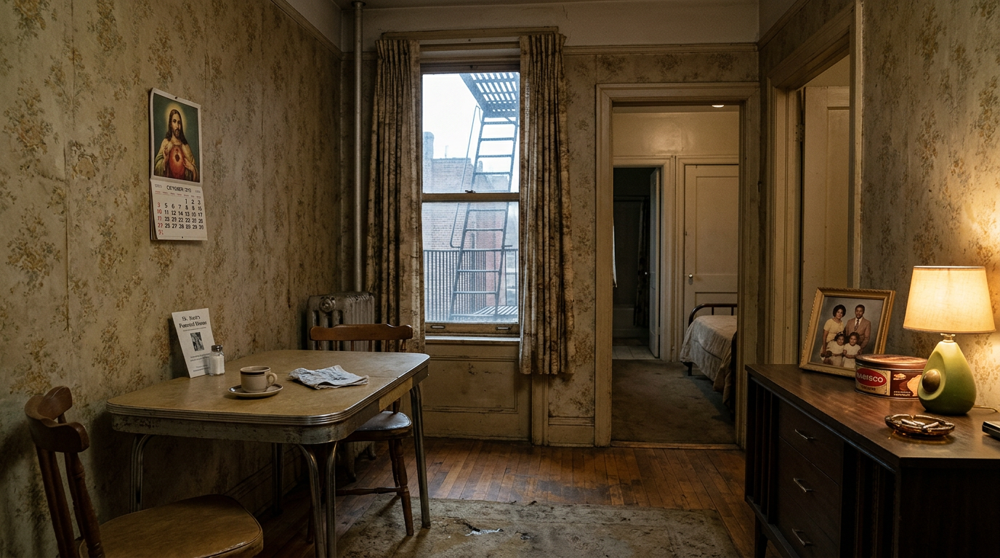
ONE horizontal 16:9 photorealistic 1975 production-design reference plate: an EMPTY ROOM, absolutely no people, for the Brooklyn crime drama Sweet Jesus. The Ray family's modest Bed-Stuy railroad-flat front room: a small formica kitchen table with two mismatched chairs, a sideboard with a framed family photograph and a biscuit tin, a low dresser, a narrow window with a fire escape outside and overcast grey daylight, worn floral wallpaper, scuffed hardwood, a doorway to a hallway and a second doorway to a bedroom. Catholic calendar on the wall, a funeral-home pamphlet on the table, a coffee cup. Camera at seated human height, wide establishing composition, deep focus. Period October 1975: muted earth-tone palette, practical light, 35mm film grain, unglamorous realism. No people, no captions, subtitles, overlaid text, logos or watermarks.
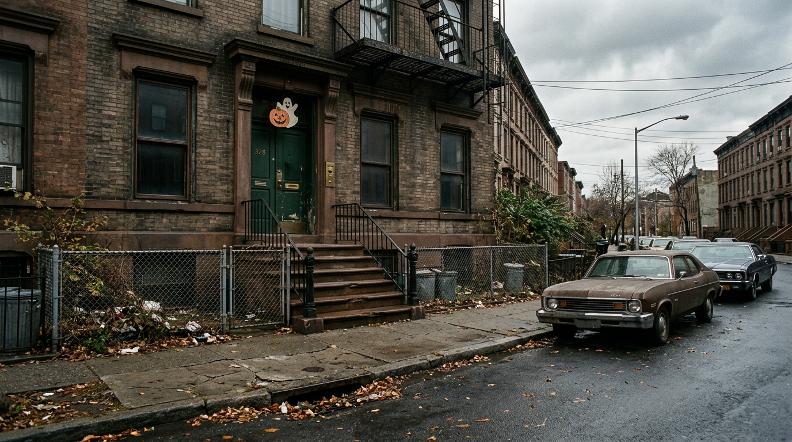
ONE horizontal 16:9 photorealistic 1975 production-design reference plate: an EMPTY EXTERIOR, no people, for the Brooklyn crime drama Sweet Jesus. A brownstone stoop on a narrow Bed-Stuy street, Halloween morning: worn stone steps and a black iron railing, a chipped green front door with a buzzer panel, a fire escape and a Halloween decoration above, chain-link fence, a gutter and kerb, parked 1970s sedans, wet overcast light. Camera across the street at human height, wide establishing composition showing the stoop, the doorway and the street. Period October 1975: muted earth-tone palette, practical light, 35mm film grain, unglamorous realism. No people, no captions, subtitles, overlaid text, logos or watermarks.
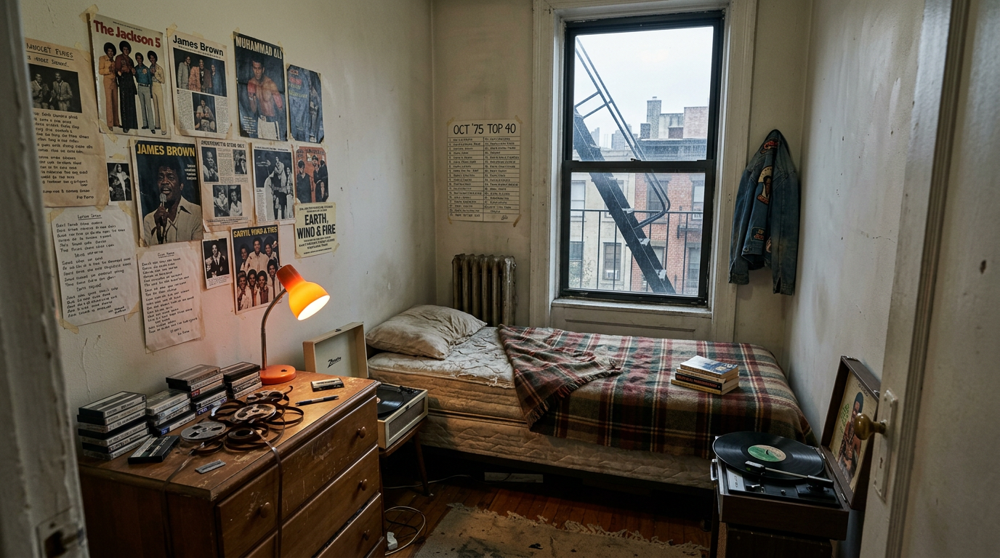
ONE horizontal 16:9 photorealistic 1975 production-design reference plate: an EMPTY ROOM, absolutely no people, for the Brooklyn crime drama Sweet Jesus. A small teenager's bedroom in a Bed-Stuy flat: a narrow single bed with a plain plaid blanket, a low chest of drawers covered in cassette tapes, reels of loose tape and a razor blade, a gooseneck lamp, a small record player, taped-up magazine clippings and a hand-drawn music chart on the wall, a denim jacket on a hook, a window with a fire escape and grey daylight. Camera at human height, wide establishing composition, deep focus, slightly cramped and lived-in. Period October 1975: muted earth-tone palette, practical light, 35mm film grain, unglamorous realism. No people, no captions, subtitles, overlaid text, logos or watermarks.
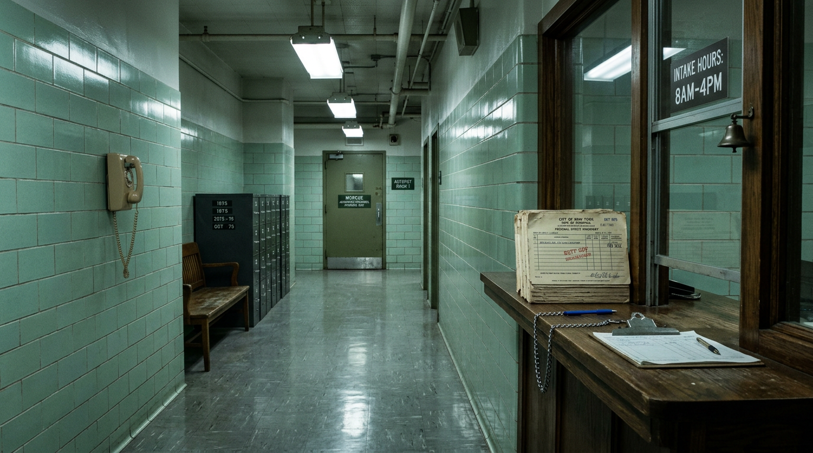
ONE horizontal 16:9 photorealistic 1975 production-design reference plate: an EMPTY ROOM, absolutely no people, for the Brooklyn crime drama Sweet Jesus. A city morgue corridor and intake counter: a long green-tiled corridor with a heavy swinging door, a high wooden service counter with a sliding glass partition, a rubber-stamped personal-effects form and a ballpoint pen on a chain, a wall telephone, a clipboard, a row of metal filing drawers, a bench, harsh overhead fluorescent tubes reflecting off the tile floor. Camera down the corridor at human height, wide establishing composition. Period October 1975: muted earth-tone palette, practical light, 35mm film grain, unglamorous realism. No people, no captions, subtitles, overlaid text, logos or watermarks.
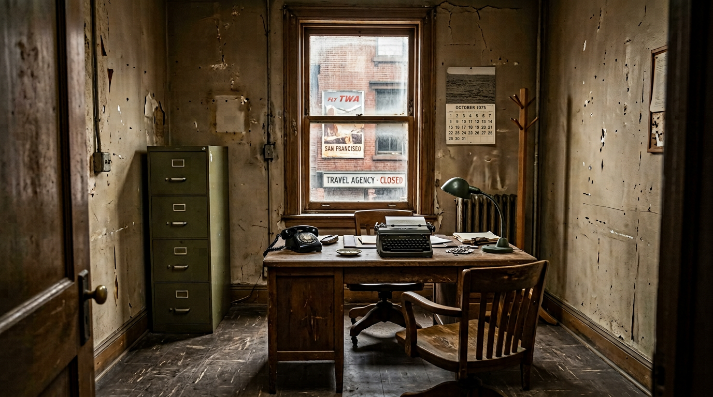
ONE horizontal 16:9 photorealistic 1975 production-design reference plate: an EMPTY ROOM, absolutely no people, for the Brooklyn crime drama Sweet Jesus. A shabby one-room private-investigator's office above a closed travel agency: a battered wooden desk with a rotary telephone, a desk lamp and an old typewriter, a green metal filing cabinet, a wooden swivel chair, a sash window that sticks half-open with a faded travel poster outside, a wall calendar, a coatrack, scuffed linoleum, a radiator, dust in the light, a paper twist of sunflower seeds and a small saucer on the desk. Camera at human height in the doorway, wide establishing composition, late-morning light through the window. Period October 1975: muted earth-tone palette, practical light, 35mm film grain, unglamorous realism. No people, no captions, subtitles, overlaid text, logos or watermarks.
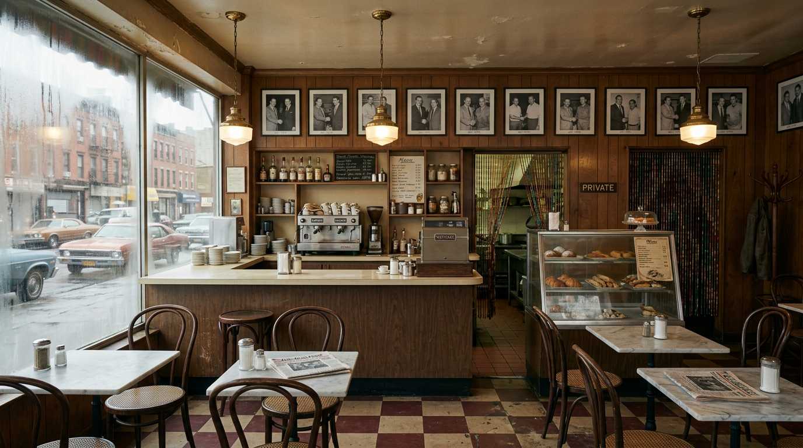
ONE horizontal 16:9 photorealistic 1975 production-design reference plate: an EMPTY ROOM, absolutely no people, for the Brooklyn crime drama Sweet Jesus. A small Italian-American coffee shop: a Formica lunch counter with a chrome espresso machine and stacked cups, a row of framed photographs of men shaking hands on the panelled wall, sugar-glass display case, small marble-topped tables with bentwood chairs, a beaded curtain to a back room, tiled floor, hanging pendant lamps, steamy window onto the street. Camera at human height, wide establishing composition, deep focus. Period October 1975: muted earth-tone palette, practical light, 35mm film grain, unglamorous realism. No people, no captions, subtitles, overlaid text, logos or watermarks.
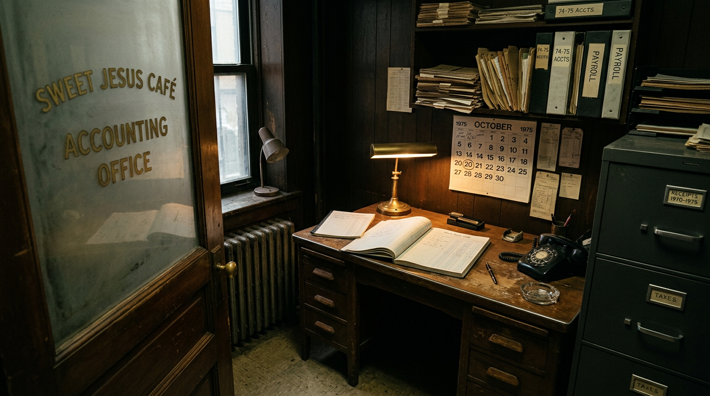
ONE horizontal 16:9 photorealistic 1975 production-design reference plate: an EMPTY ROOM, absolutely no people, for the Brooklyn crime drama Sweet Jesus. The cramped back office of an Italian coffee shop, used as an accountant's room: a scarred wooden desk with a ledger, a columnar accounts book, a fountain pen, a rotary telephone and a desk lamp, a heavy metal filing cabinet, a wall calendar, a frosted-glass door panel lettered in faint gold to the shop, a reading lamp, stacks of receipt folders, a small radiator, dark panelled walls. Camera at human height in the doorway, wide establishing composition. Period October 1975: muted earth-tone palette, practical light, 35mm film grain, unglamorous realism. No people, no captions, subtitles, overlaid text, logos or watermarks.
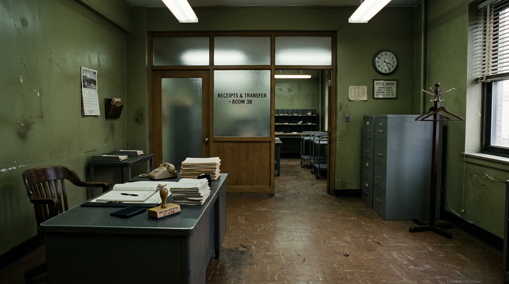
ONE horizontal 16:9 photorealistic 1975 production-design reference plate: an EMPTY ROOM, absolutely no people, for the Brooklyn crime drama Sweet Jesus. A dingy municipal City Property office: a heavy government-issue desk with a receipt book, an ink pad and a large rubber stamp, a wooden swivel chair, grey metal filing cabinets, a frosted-glass partition looking onto a clerks' room with sorting tables and rolling carts, a wall clock, a coat stand, a rotary telephone, stacks of transfer slips in precise piles, scuffed municipal-green walls and a linoleum floor. Camera at human height, wide establishing composition, deep focus. Period October 1975: muted earth-tone palette, practical light, 35mm film grain, unglamorous realism. No people, no captions, subtitles, overlaid text, logos or watermarks.
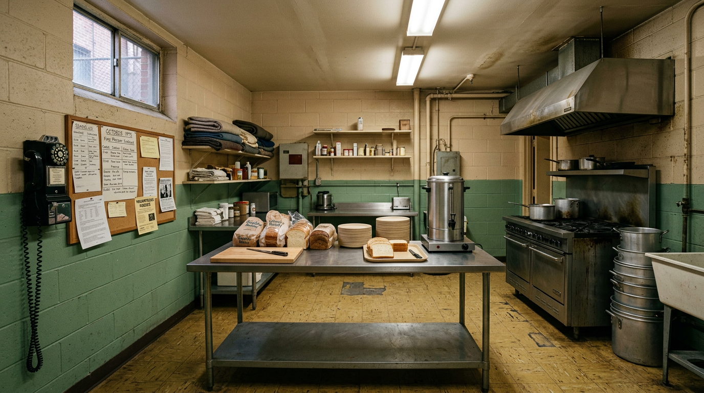
ONE horizontal 16:9 photorealistic 1975 production-design reference plate: an EMPTY ROOM, absolutely no people, for the Brooklyn crime drama Sweet Jesus. A church basement kitchen used for a community food programme: a long stainless-steel work table with a bread knife, a cutting board and loaves, a stack of paper plates and a sandwich tray, a wall-mounted telephone with a long cord, a coffee urn, an industrial stove, a cork noticeboard with handwritten schedules, folded blankets on a shelf, painted cinderblock walls and a linoleum floor, fluorescent tube light. Camera at human height, wide establishing composition, deep focus. Period October 1975: muted earth-tone palette, practical light, 35mm film grain, unglamorous realism. No people, no captions, subtitles, overlaid text, logos or watermarks.
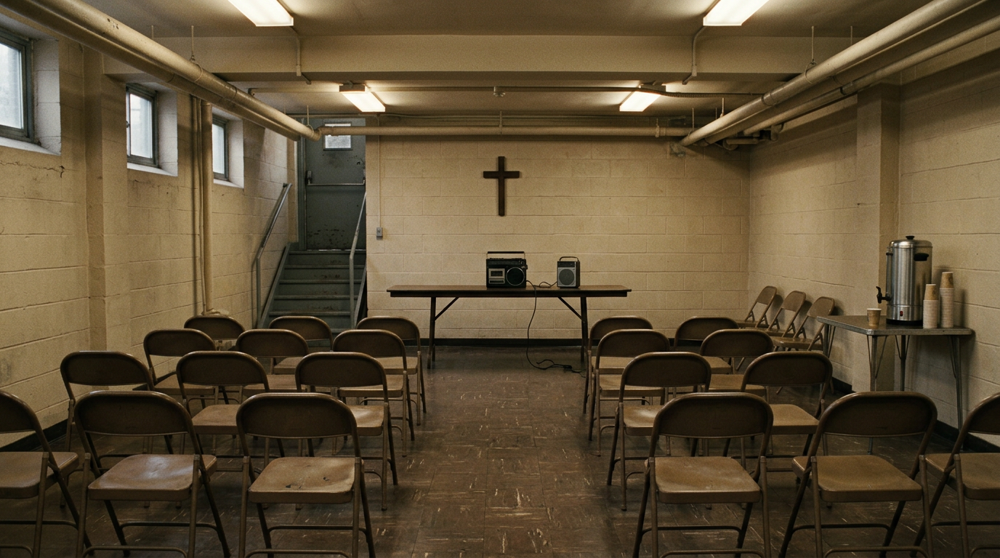
ONE horizontal 16:9 photorealistic 1975 production-design reference plate: an EMPTY ROOM, absolutely no people, for the Brooklyn crime drama Sweet Jesus. A plain church basement meeting room: rows of folding chairs facing a bare trestle table, no organ and no altar, a wooden cross on the wall, a coffee urn and a stack of paper cups on a side table, a small cassette recorder on the trestle table with a cable to a portable speaker, steam pipes along the ceiling, painted cinderblock walls, a linoleum floor and a stairway to the street. Camera at human height from the back of the room, wide establishing composition. Period October 1975: muted earth-tone palette, practical light, 35mm film grain, unglamorous realism. No people, no captions, subtitles, overlaid text, logos or watermarks.
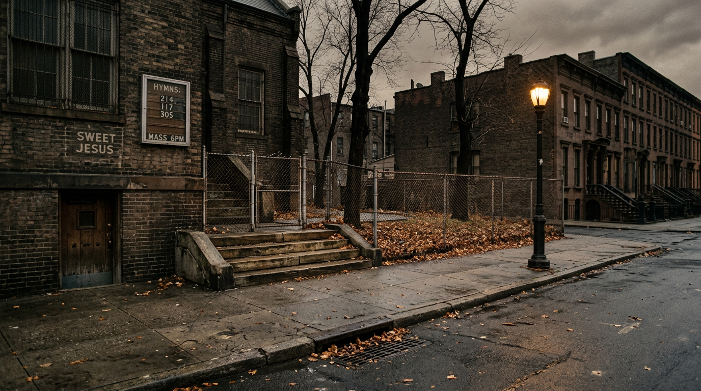
ONE horizontal 16:9 photorealistic 1975 production-design reference plate: an EMPTY EXTERIOR, no people, for the Brooklyn crime drama Sweet Jesus. A small Brooklyn church yard at dusk: worn stone steps down to the sidewalk, a brick church wall with a basement door and a hymn board, a chain-link fence, two bare street trees with fallen leaves, an iron lamppost just coming on, a kerb and storm drain, brownstones behind, damp overcast evening light. Camera across the street at human height, wide establishing composition showing the steps, the basement door and the curb where a vehicle can park. Period October 1975: muted earth-tone palette, practical light, 35mm film grain, unglamorous realism. No people, no captions, subtitles, overlaid text, logos or watermarks.
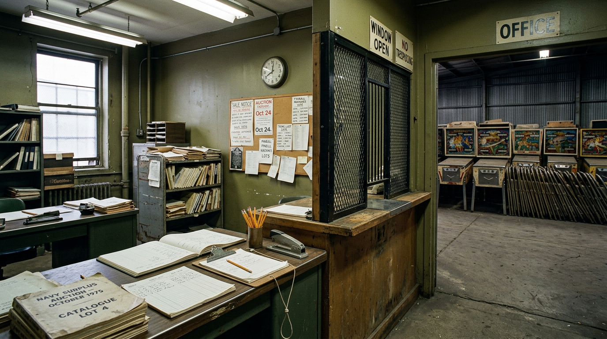
ONE horizontal 16:9 photorealistic 1975 production-design reference plate: an EMPTY ROOM, absolutely no people, for the Brooklyn crime drama Sweet Jesus. A navy yard surplus auction office: a battered counter with a service window and a metal grille, a clerk's desk with a ledger, a clipboard and pencils, stacks of auction catalogues, a rolling cart of paperwork, a wall clock, a corkboard of sale notices, and through an open doorway a warehouse bay of seized pinball machines and stacked folding chairs, corrugated metal walls, concrete floor. Camera at human height, wide establishing composition, deep focus. Period October 1975: muted earth-tone palette, practical light, 35mm film grain, unglamorous realism. No people, no captions, subtitles, overlaid text, logos or watermarks.
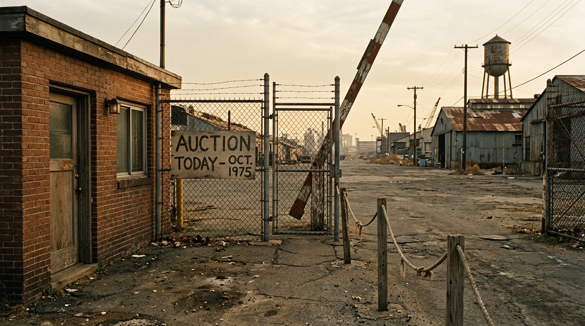
ONE horizontal 16:9 photorealistic 1975 production-design reference plate: an EMPTY EXTERIOR, no people, for the Brooklyn crime drama Sweet Jesus. The pedestrian gate of the Brooklyn Navy Yard in late afternoon: a chain-link fence topped with barbed wire, a brick guardhouse with a sliding window, a raised wooden boom barrier, a hand-lettered AUCTION TODAY sign on the gate, a queue line marked by rope, cracked asphalt, distant corrugated warehouse roofs and a water tower, low sun through haze. Camera at human height just inside the gate looking out, wide establishing composition. Period October 1975: muted earth-tone palette, practical light, 35mm film grain, unglamorous realism. No people, no captions, subtitles, overlaid text, logos or watermarks.
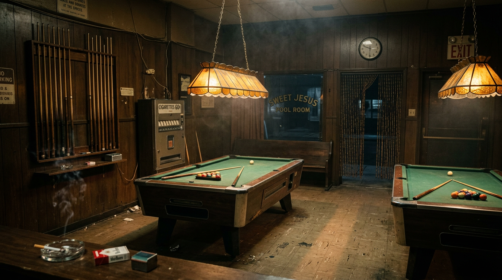
ONE horizontal 16:9 photorealistic 1975 production-design reference plate: an EMPTY ROOM, absolutely no people, for the Brooklyn crime drama Sweet Jesus. A dim, smoky neighbourhood pool hall: two green-baize pool tables under low hanging lamps with chained glass shades, a wall rack of cues, a chalk box on the rail, a cigarette machine and a cigarette burning in a glass ashtray on a ledge, a small spectator bench, dark wood panelling, a scuffed linoleum floor, a beaded curtain to the street, a wall clock. Camera at human height, wide establishing composition, deep focus, long shadows. Period October 1975: muted earth-tone palette, practical light, 35mm film grain, unglamorous realism. No people, no captions, subtitles, overlaid text, logos or watermarks.
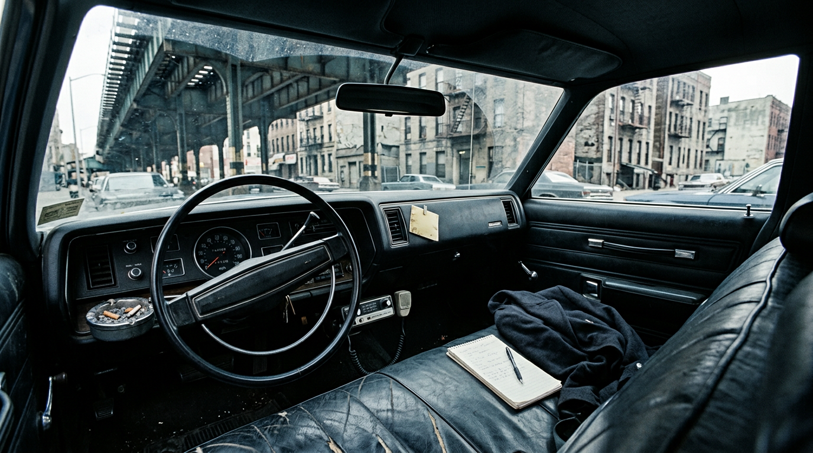
ONE horizontal 16:9 photorealistic 1975 production-design reference plate: the EMPTY INTERIOR of a parked car, no people, for the Brooklyn crime drama Sweet Jesus. The front seat of an unmarked 1970s American detective's sedan parked beneath elevated subway tracks: a bench front seat in worn dark vinyl, a steering wheel with a chrome horn ring, a dash with a round speedometer and an ashtray full of ash, a plain-clothes policeman's dark overcoat folded on the passenger seat, a spiral notebook and a pen on the seat, a photograph face down on the dash, a two-way radio under the dash. Through the windscreen: the cast-iron columns of the elevated train structure, shadows and grimy daylight; through the side windows, brick tenements. Camera from the back seat at eye level, wide composition showing both front seats and the windscreen. Period October 1975: muted earth-tone palette, practical light, 35mm film grain, unglamorous realism. No people, no captions, subtitles, overlaid text, logos or watermarks.
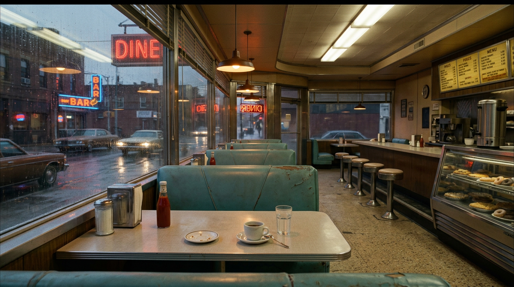
ONE horizontal 16:9 photorealistic 1975 production-design reference plate: an EMPTY ROOM, absolutely no people, for the Brooklyn crime drama Sweet Jesus. A worn all-night diner at early evening: a row of vinyl booths with a chrome trim, a Formica table with a sugar shaker, a ketchup bottle, a napkin dispenser and a small saucer, a coffee cup and a glass water, a chrome-and-glass pastry case, a counter with pie display and a coffee urn, a wall-mounted menu board, terrazzo floor, fluorescent and warm pendant light, a rain-streaked window onto a lit street with neon outside. Camera at human height across a booth, wide establishing composition, deep focus. Period October 1975: muted earth-tone palette, practical light, 35mm film grain, unglamorous realism. No people, no captions, subtitles, overlaid text, logos or watermarks.
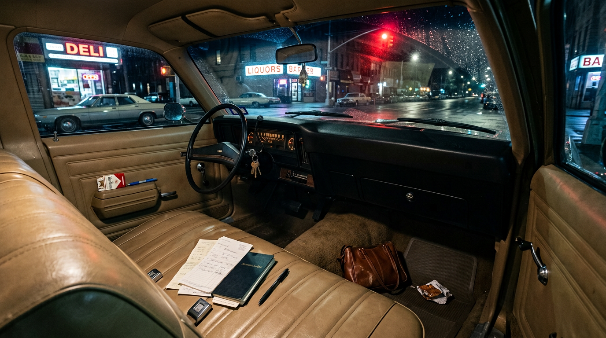
ONE horizontal 16:9 photorealistic 1975 production-design reference plate: the EMPTY INTERIOR of a parked car, no people, for the Brooklyn crime drama Sweet Jesus. The front seat of an ordinary mid-1970s American compact sedan, clean and well kept, at night: tan or dark vinyl bench seat, a simple steering wheel and dash with round gauges, a clutch of papers and a slender accounts ledger resting on the passenger seat, a packet of cigarettes and a pen in the door pocket, a small handbag on the floor, a folded carbon transfer slip on the dash. Through the windscreen a red traffic light and wet night street with shopfronts and streetlamps; the passenger door frame in the foreground. Camera from the rear passenger side at eye level, wide composition showing both front seats and the traffic light ahead. Period October 1975: muted earth-tone palette, practical light, 35mm film grain, unglamorous realism. No people, no captions, subtitles, overlaid text, logos or watermarks.
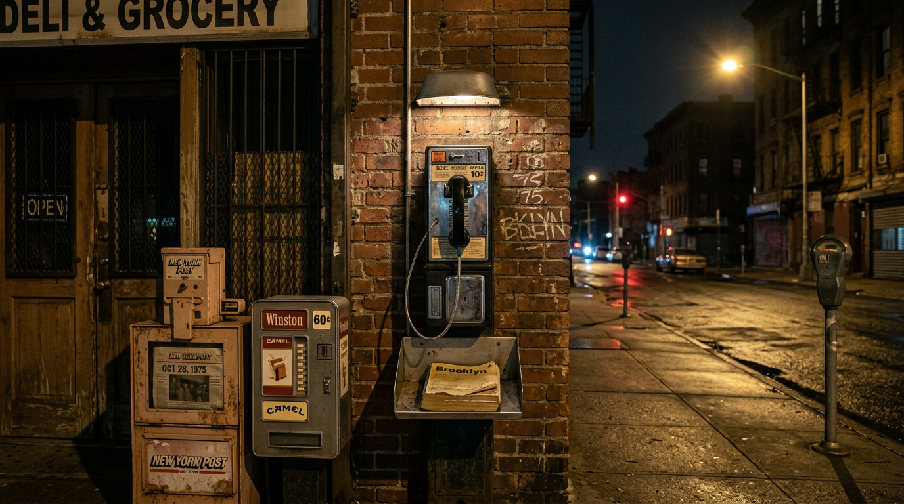
ONE horizontal 16:9 photorealistic 1975 production-design reference plate: an EMPTY EXTERIOR street detail, no people, for the Brooklyn crime drama Sweet Jesus. A coin-operated payphone on a brick wall beside a shopfront at night in Brooklyn: a chrome-and-black wall telephone with a coin slot and a heavy handset on a metal cord, a small hinged directory shelf, a metal hood light above it, a phone number pencilled on the painted wall beside it, a cigarette machine and a newspaper box nearby, a kerb and a parking meter, wet pavement reflecting a streetlamp and a distant traffic signal. Camera at human height a few feet back, wide-ish establishing composition that leaves room for two figures to stand at the phone. Period October 1975: muted earth-tone palette, practical light, 35mm film grain, unglamorous realism. No people, no captions, subtitles, overlaid text, logos or watermarks.
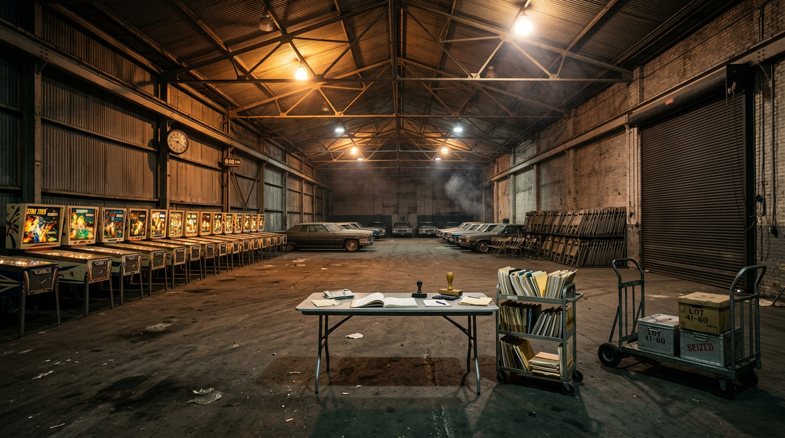
ONE horizontal 16:9 photorealistic 1975 production-design reference plate: an EMPTY ROOM, absolutely no people, for the Brooklyn crime drama Sweet Jesus. A vast Brooklyn Navy Yard warehouse bay at night after a public auction: sodium-vapour lamps high in a corrugated steel roof, a row of seized pinball machines glowing along the left wall, stacked folding chairs against the back wall, a seized Cadillac and a rows of parked auction vehicles, a folding table with a receipt book, an oversized wood-handled rubber stamp and an ink pad, a sealed hand cart, a rolling clerk's cart of paperwork, a hand truck, a big rolling bay door, concrete floor, a large wall clock reading just after eight, dust and cigarette smoke in the light. Camera at human height from the middle of the floor, very wide establishing composition showing the bay door, the pinball row, the table and the cars. Period October 1975: muted earth-tone palette, practical light, 35mm film grain, unglamorous realism. No people, no captions, subtitles, overlaid text, logos or watermarks.
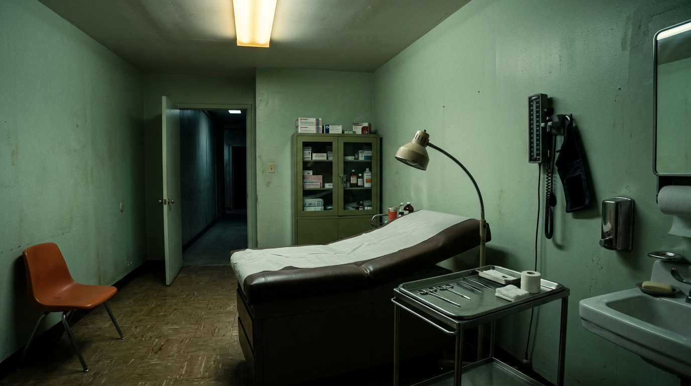
ONE horizontal 16:9 photorealistic 1975 production-design reference plate: an EMPTY ROOM, absolutely no people, for the Brooklyn crime drama Sweet Jesus. A small neighbourhood clinic treatment room at night: a padded examination table with a paper sheet, a stainless-steel instrument tray with scissors, forceps, gauze and a bandage roll, a gooseneck examination lamp, a metal supply cabinet with glass doors, a sink with a soap dispenser, a wall-mounted blood-pressure cuff, a linoleum floor, pale green painted walls, a plastic chair in the corner, an open doorway to a corridor. Camera at human height, wide establishing composition, harsh but small practical fluorescent light. Period October 1975: muted earth-tone palette, practical light, 35mm film grain, unglamorous realism. No people, no captions, subtitles, overlaid text, logos or watermarks.
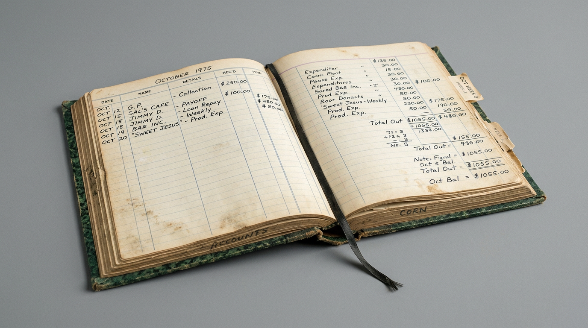
ONE horizontal 16:9 photorealistic 1975 prop reference photograph for the Brooklyn crime drama Sweet Jesus: Corn's ledger, isolated alone on a plain seamless mid-grey studio background with nothing else in frame, even soft top light, sharp focus, no shadows of other objects. The prop: a slim cloth-bound accounts ledger, dark green mottled boards with worn corners, a cracked spine, a pencil-thin black ribbon marker, ruled columns of handwritten figures in blue-black ink visible on the open page, a few pages flagged with slips of paper. Shot straight on, slightly three-quarter, the whole object in frame with margin around it. Period 1975 materials and print, 35mm film grain, unglamorous realism. No people, no hands, no captions, subtitles, overlaid text, logos or watermarks.
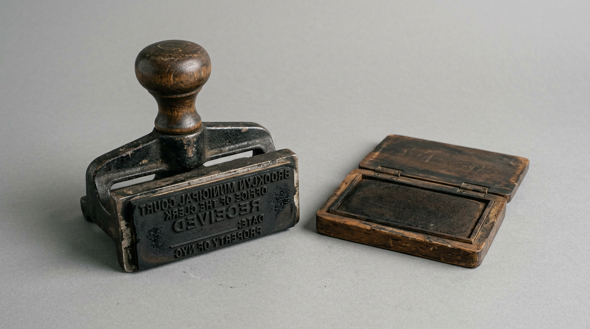
ONE horizontal 16:9 photorealistic 1975 prop reference photograph for the Brooklyn crime drama Sweet Jesus: an oversized municipal rubber stamp, isolated alone on a plain seamless mid-grey studio background with nothing else in frame, even soft top light, sharp focus. The prop: a heavy wood-handled stamping press the size of a coffee can, turned wood knob, blackened cast-iron body, a thick rubber die on the underside, dried black ink on the die, a wooden-handled stamp pad with a hinged lid beside it, both resting on the seamless ground. Shot slightly from above at three-quarter angle, the whole object in frame with margin around it. Period 1975 materials and print, 35mm film grain, unglamorous realism. No people, no hands, no captions, subtitles, overlaid text, logos or watermarks.
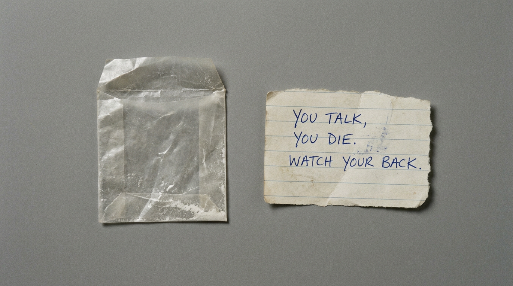
ONE horizontal 16:9 photorealistic 1975 prop reference photograph for the Brooklyn crime drama Sweet Jesus: a small glassine envelope and a threatening note, isolated together on a plain seamless mid-grey studio background with nothing else in frame, even soft top light, sharp focus. The props: one small translucent glassine bag, empty, its flap open, a trace of white powder residue in a crease; and beside it a torn piece of cheap lined notepaper with a short message hand-printed in blue ballpoint capitals, the handwriting small and hurried. The two objects are the only things in frame, shot from directly above with margin around them. Period 1975 paper and print, 35mm film grain, unglamorous realism, no glamorising of the drug. Period 1975 materials and print, 35mm film grain, unglamorous realism. No people, no hands, no captions, subtitles, overlaid text, logos or watermarks.
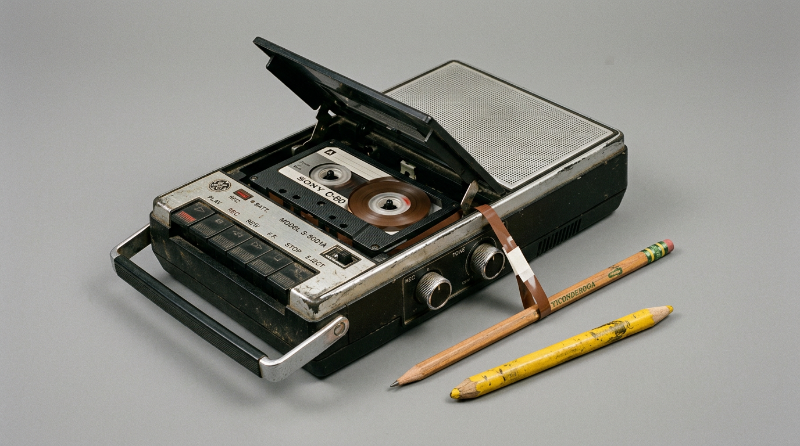
ONE horizontal 16:9 photorealistic 1975 prop reference photograph for the Brooklyn crime drama Sweet Jesus: a shoebox cassette recorder with a spliced tape loop, isolated on a plain seamless mid-grey studio background with nothing else in frame, even soft top light, sharp focus. The props: a black-and-silver shoebox portable cassette recorder with a carry handle, its lid open showing two spinning hubs, a hand-spliced loop of brown magnetic tape joined with a short strip of white splicing tape running out of the cassette shell and looped through the body of an ordinary wooden pencil laid beside it, and a worn yellow grease pencil. Everything shot from slightly above at three-quarter angle, the whole arrangement in frame with margin around it. Period 1975 materials and print, 35mm film grain, unglamorous realism. No people, no hands, no captions, subtitles, overlaid text, logos or watermarks.
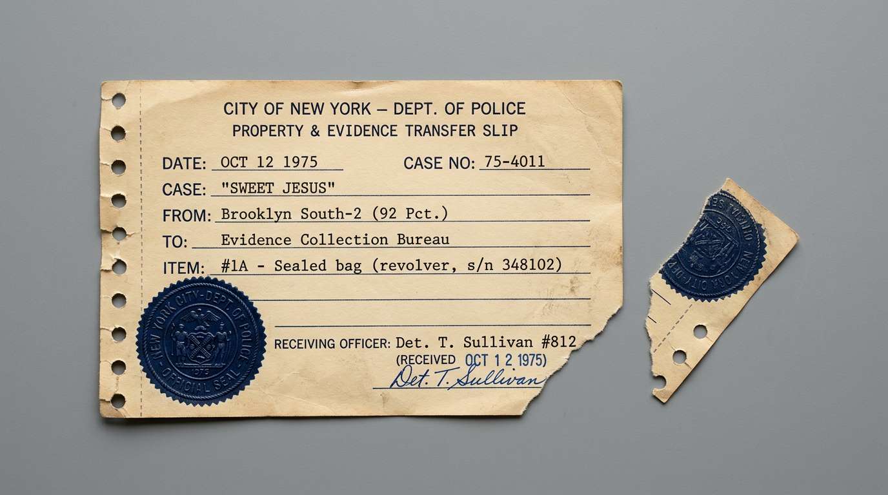
ONE horizontal 16:9 photorealistic 1975 prop reference photograph for the Brooklyn crime drama Sweet Jesus: a carbon transfer slip with a city seal, isolated on a plain seamless mid-grey studio background with nothing else in frame, even soft top light, sharp focus. The props: a thin manila carbon-copy transfer form, printed ruled fields and a typed description line, a dark blue embossed municipal seal pressed into the corner, a rubber-stamped signature block, a perforated edge, and beside it a small torn triangle of the same manila paper with a matching torn edge, its corner carrying part of the same seal. Shot from directly above, both pieces flat and fully in frame with margin around them. Period 1975 materials and print, 35mm film grain, unglamorous realism. No people, no hands, no captions, subtitles, overlaid text, logos or watermarks.
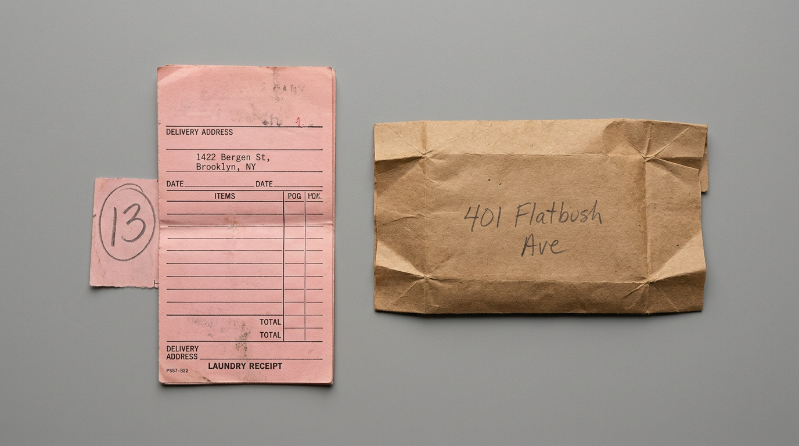
ONE horizontal 16:9 photorealistic 1975 prop reference photograph for the Brooklyn crime drama Sweet Jesus: a laundry receipt and a seed wrapper, isolated together on a plain seamless mid-grey studio background with nothing else in frame, even soft top light, sharp focus. The props: a narrow pink carbon laundry receipt with a printed delivery address and a large pencilled numeral thirteen circled in the margin, folded once; and beside it a small twist of brown paper that held sunflower seeds, opened flat, with a handwritten address pencilled on its blank back. Shot from directly above, both pieces flat and fully in frame with margin around them. Period 1975 materials and print, 35mm film grain, unglamorous realism. No people, no hands, no captions, subtitles, overlaid text, logos or watermarks.
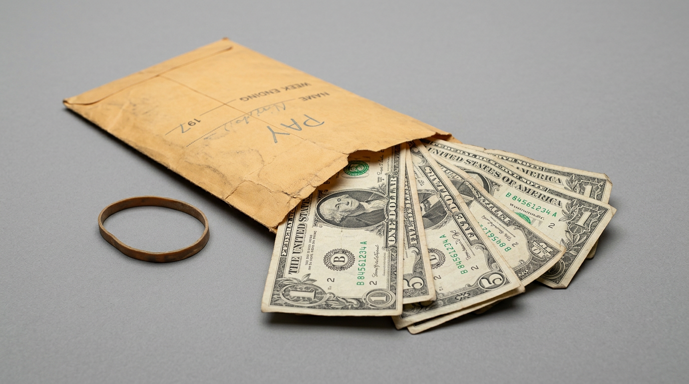
ONE horizontal 16:9 photorealistic 1975 prop reference photograph for the Brooklyn crime drama Sweet Jesus: an envelope of cash, isolated on a plain seamless mid-grey studio background with nothing else in frame, even soft top light, sharp focus. The props: a cheap manila pay envelope, its flap open, with a fan of worn small-denomination 1970s United States banknotes half out of it, the notes soft and creased, a rubber band beside them. Shot from slightly above at three-quarter angle, the whole arrangement in frame with margin around it. Period 1975 paper and currency, 35mm film grain, unglamorous realism. Period 1975 materials and print, 35mm film grain, unglamorous realism. No people, no hands, no captions, subtitles, overlaid text, logos or watermarks.
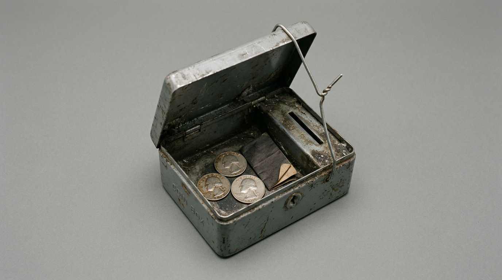
ONE horizontal 16:9 photorealistic 1975 prop reference photograph for the Brooklyn crime drama Sweet Jesus: a laundromat coin box being opened, isolated on a plain seamless mid-grey studio background with nothing else in frame, even soft top light, sharp focus. The props: the small grey metal coin box of a coin-operated washing machine, its lid levered open with a bent wire coat hanger, three quarters and a folded corner of thin carbon paper inside it, greasy dust and lint around the slot. Shot slightly from above at three-quarter angle, the whole box in frame with margin around it. Period 1975 materials and print, 35mm film grain, unglamorous realism. No people, no hands, no captions, subtitles, overlaid text, logos or watermarks.
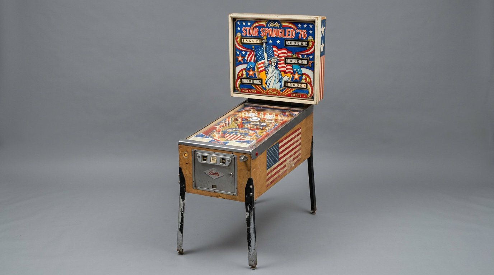
ONE horizontal 16:9 photorealistic 1975 prop reference photograph for the Brooklyn crime drama Sweet Jesus: a 1970s pinball machine, isolated on a plain seamless mid-grey studio background with nothing else in frame, even soft top light, sharp focus. The machine: an electromechanical pinball cabinet with a brightly painted patriotic 1970s playfield, red white and blue artwork, a star motif, a glass playfield with flippers, bumpers and rollover buttons, a light-up backbox with a score reel display, chrome legs, a coin door, one leg scuffed, the whole machine upright and fully in frame with margin around it. Period 1975 materials and print, 35mm film grain, unglamorous realism. No people, no hands, no captions, subtitles, overlaid text, logos or watermarks.
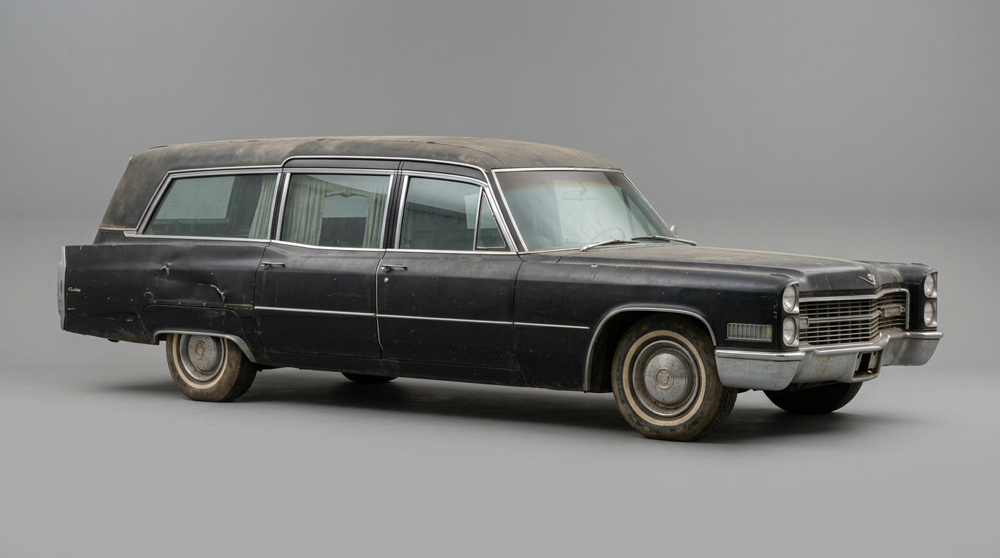
ONE horizontal 16:9 photorealistic 1975 prop reference photograph for the Brooklyn crime drama Sweet Jesus: a battered 1960s Cadillac hearse, isolated on a plain seamless mid-grey studio background with nothing else in frame, even overcast light, sharp focus. The vehicle: a long black 1966 Cadillac funeral coach with a tall glass side window, a faded vinyl roof, dull chrome trim, a small dent in the rear quarter panel, a rear loading door, whitewall tyres and a dusty lower body, parked level and seen from the front three-quarter, the whole vehicle in frame with margin around it. Period 1975 wear and paint, 35mm film grain, unglamorous realism. Period 1975 materials and print, 35mm film grain, unglamorous realism. No people, no hands, no captions, subtitles, overlaid text, logos or watermarks.
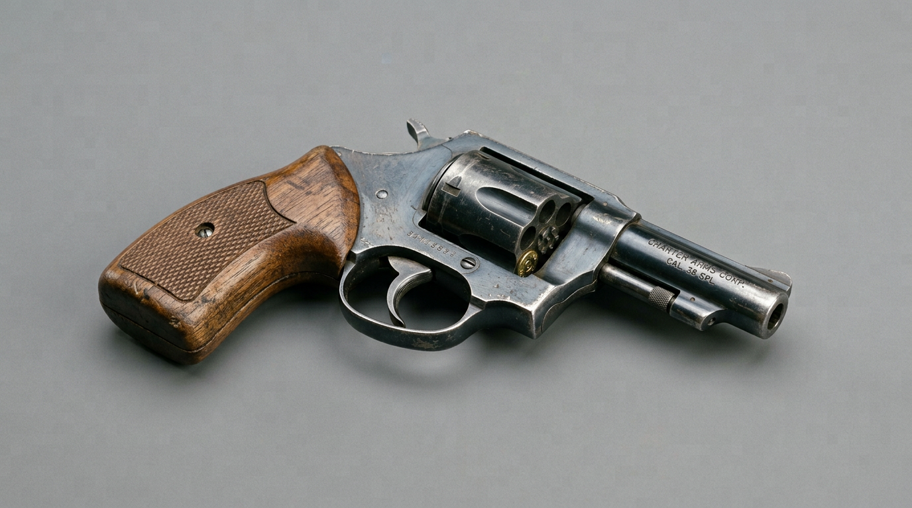
ONE horizontal 16:9 photorealistic 1975 prop reference photograph for the Brooklyn crime drama Sweet Jesus: a snub-nose .38 revolver, isolated alone on a plain seamless mid-grey studio background with nothing else in frame, even soft top light, sharp focus. The prop: a compact five-shot double-action revolver with a two-inch barrel, worn blued finish with holster wear at the muzzle and cylinder, a checkered wooden grip, the cylinder swung out showing one spent casing and one live round, resting flat on the seamless ground. Shot from slightly above at three-quarter angle, the whole revolver in frame with margin around it, treated as a prop object with no glamour. Period 1975 firearms and finish, 35mm film grain. No people, no hands, no blood. Period 1975 materials and print, 35mm film grain, unglamorous realism. No people, no hands, no captions, subtitles, overlaid text, logos or watermarks.
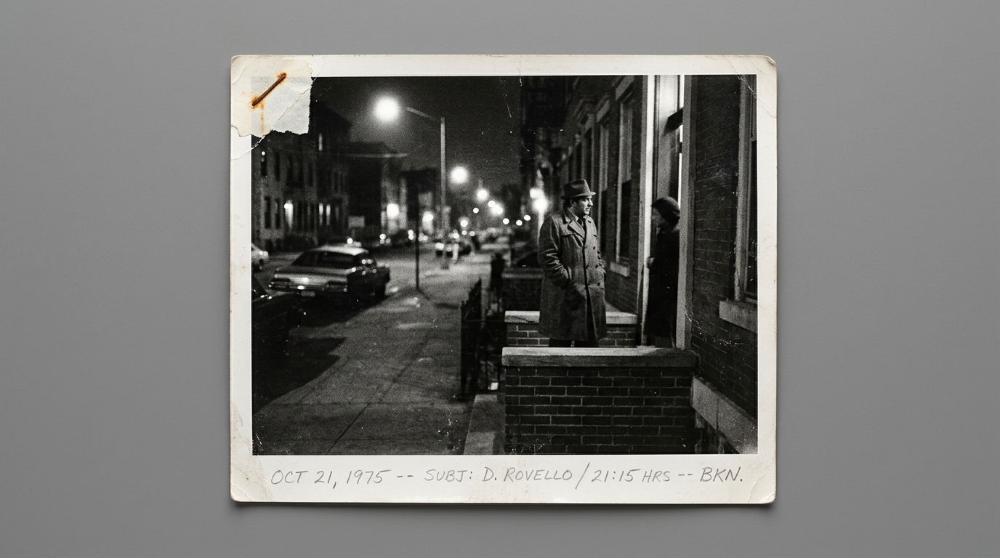
ONE horizontal 16:9 photorealistic 1975 prop reference photograph for the Brooklyn crime drama Sweet Jesus: a black-and-white surveillance photograph, isolated alone on a plain seamless mid-grey studio background with nothing else in frame, even soft top light, sharp focus. The prop: a grainy 8x10 glossy black-and-white police surveillance print, slightly curling at the corners, high contrast and blown out in places, showing from across a street a man in a dark coat standing on a stoop with a smaller figure in a doorway behind him, the picture taken at night with a long exposure, a white border and a stapled corner, a pencilled date on the back edge. Shot from directly above, the print flat and fully in frame with margin around it. Period 1975 photographic paper and printing, 35mm film grain, unglamorous realism. No people other than the figures inside the photograph. Period 1975 materials and print, 35mm film grain, unglamorous realism. No people, no hands, no captions, subtitles, overlaid text, logos or watermarks.
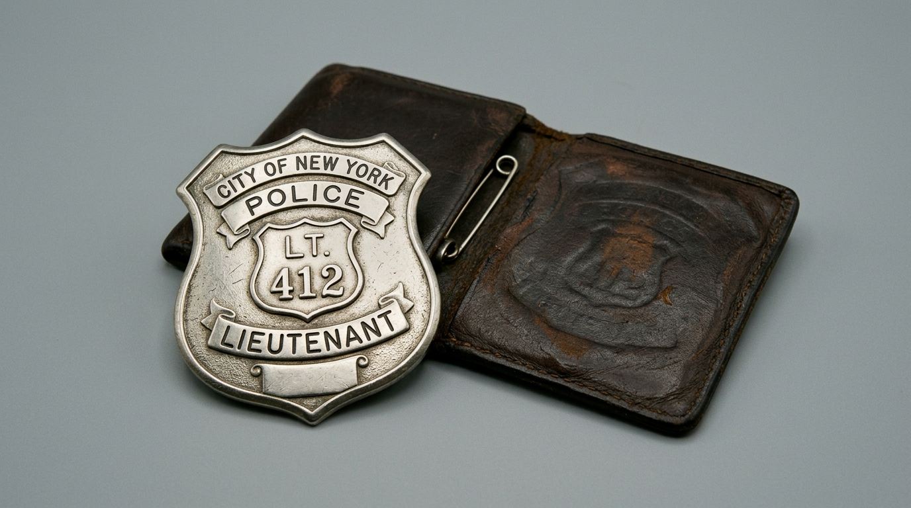
ONE horizontal 16:9 photorealistic 1975 prop reference photograph for the Brooklyn crime drama Sweet Jesus: a police lieutenant's badge, isolated alone on a plain seamless mid-grey studio background with nothing else in frame, even soft top light, sharp focus. The prop: a silver-coloured shield-style detective's badge with a worn nickel finish, fine scratches and a dark patina in the recesses, a safety-pin style clasp on the back, resting beside its dark leather badge wallet, one flap of the wallet open showing the badge shaped wear inside. Shot slightly from above at three-quarter angle, both pieces in frame with margin around them. Period 1975 metalwork and leather, 35mm film grain, unglamorous realism. Period 1975 materials and print, 35mm film grain, unglamorous realism. No people, no hands, no captions, subtitles, overlaid text, logos or watermarks.
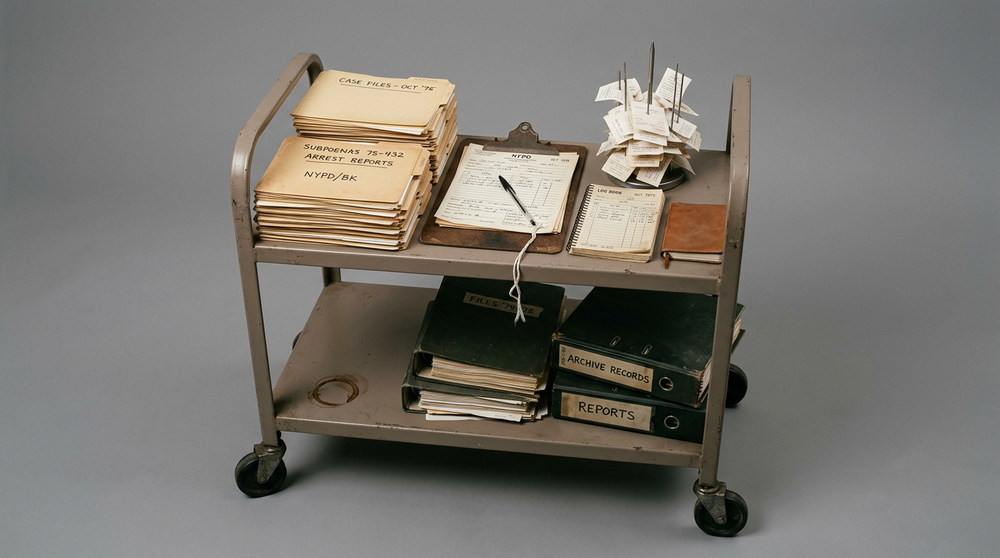
ONE horizontal 16:9 photorealistic 1975 prop reference photograph for the Brooklyn crime drama Sweet Jesus: a clerk's rolling cart of paperwork, isolated alone on a plain seamless mid-grey studio background with nothing else in frame, even soft top light, sharp focus. The prop: a small two-shelf metal office cart on castors, the top shelf stacked with manila folders, a receipt book, a spike of impaled receipts, a clipboard and a ballpoint pen on a string, a coffee ring on the lower shelf, everything squared into precise piles. Shot at human height from slightly above at three-quarter angle, the whole cart in frame with margin around it. Period 1975 office equipment, 35mm film grain, unglamorous realism. Period 1975 materials and print, 35mm film grain, unglamorous realism. No people, no hands, no captions, subtitles, overlaid text, logos or watermarks.
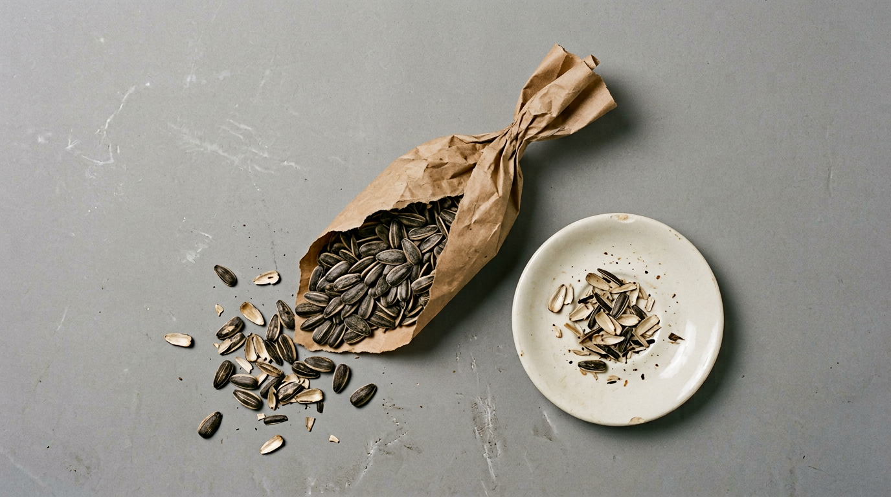
ONE horizontal 16:9 photorealistic 1975 prop reference photograph for the Brooklyn crime drama Sweet Jesus: a paper twist of sunflower seeds, isolated alone on a plain seamless mid-grey studio background with nothing else in frame, even soft top light, sharp focus. The prop: a small twist of cheap brown paper holding roasted sunflower seeds, seeds spilling slightly from one open end, a scattering of striped shells lying beside it on the seamless ground, a small ceramic saucer with a few more shells in it. Shot from directly above, the arrangement flat and fully in frame with margin around it. Period 1975 packaging, 35mm film grain, unglamorous realism. Period 1975 materials and print, 35mm film grain, unglamorous realism. No people, no hands, no captions, subtitles, overlaid text, logos or watermarks.
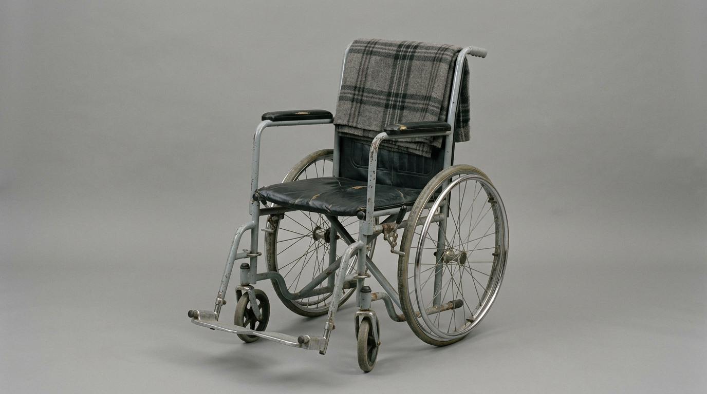
ONE horizontal 16:9 photorealistic 1975 prop reference photograph for the Brooklyn crime drama Sweet Jesus: a borrowed wheelchair, isolated alone on a plain seamless mid-grey studio background with nothing else in frame, even soft top light, sharp focus. The prop: an elderly steel-and-vinyl hospital wheelchair, chrome-plated hand rims, cracked black vinyl seat and back, a chipped grey painted frame, a footrest and a coarse blanket folded over the back, one wheel slightly out of true. Shot at human height from the front three-quarter, the whole chair in frame with margin around it. Period 1975 hospital equipment, 35mm film grain, unglamorous realism. Period 1975 materials and print, 35mm film grain, unglamorous realism. No people, no hands, no captions, subtitles, overlaid text, logos or watermarks.
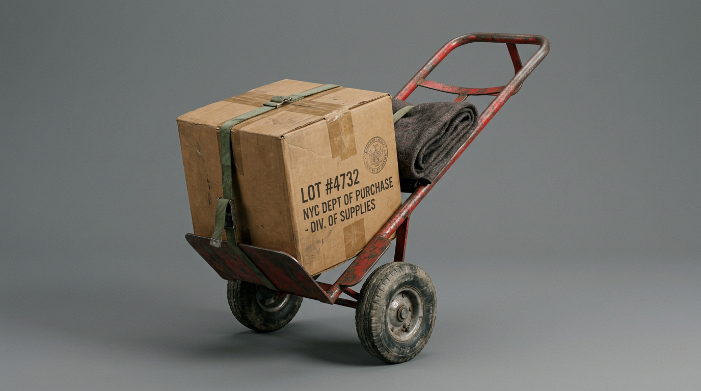
ONE horizontal 16:9 photorealistic 1975 prop reference photograph for the Brooklyn crime drama Sweet Jesus: a warehouse hand truck loaded with a sealed carton, isolated alone on a plain seamless mid-grey studio background with nothing else in frame, even soft top light, sharp focus. The prop: a battered steel two-wheel hand truck with worn pneumatic tyres and a chipped red painted frame, carrying a square sealed cardboard carton strapped to it with a webbing strap, the carton sealed with heavy tape and stencilled with a lot number and a stamped municipal seal, a folded blanket tucked behind it. Shot at human height from the front three-quarter, the whole truck and load in frame with margin around it. Period 1975 packing and stencilling, 35mm film grain, unglamorous realism. Period 1975 materials and print, 35mm film grain, unglamorous realism. No people, no hands, no captions, subtitles, overlaid text, logos or watermarks.
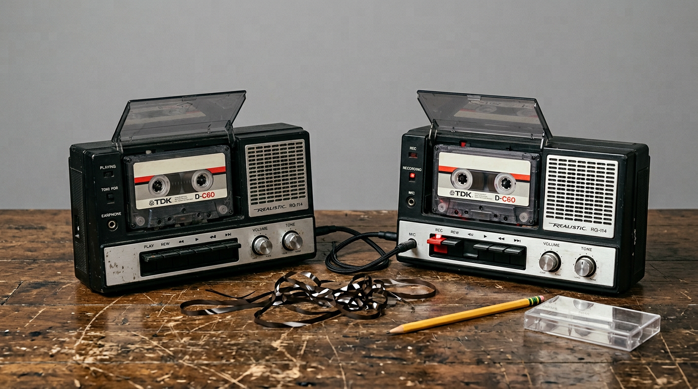
ONE horizontal 16:9 photorealistic 1975 prop reference photograph for the Brooklyn crime drama Sweet Jesus: two shoebox cassette recorders wired together to make a copy, isolated on a plain seamless mid-grey studio background with nothing else in frame, even soft top light, sharp focus. The props: two identical black-and-silver shoebox portable cassette recorders sitting face to face on a scuffed wooden floor, joined by a short patch cable running between their earphone and microphone sockets, one machine playing with its hubs turning and the other recording, a tangle of loose magnetic tape spilling across the floor between them, a cassette shell and a pencil beside them. Shot from slightly above at three-quarter angle, the whole arrangement in frame with margin around it. Period 1975 consumer electronics, 35mm film grain, unglamorous realism. Period 1975 materials and print, 35mm film grain, unglamorous realism. No people, no hands, no captions, subtitles, overlaid text, logos or watermarks.
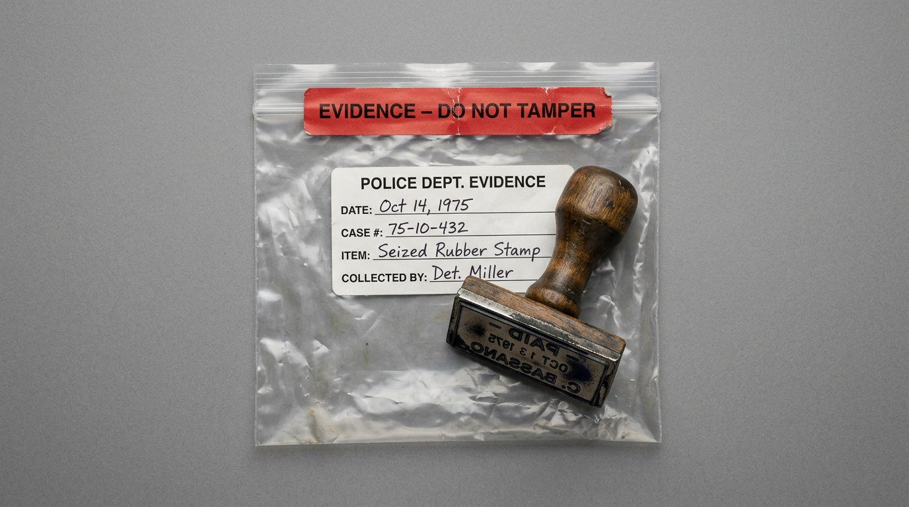
ONE horizontal 16:9 photorealistic 1975 prop reference photograph for the Brooklyn crime drama Sweet Jesus: a clear evidence bag holding a seized stamp, isolated alone on a plain seamless mid-grey studio background with nothing else in frame, even soft top light, sharp focus. The prop: a large clear plastic evidence bag with a white printed evidence label panel and a red evidence tape seal across its zip closure, and inside it an oversized wood-handled rubber stamp lying on its side, the bag creased and slightly cloudy. Shot from directly above, the bag flat and fully in frame with margin around it. Period 1975 plastics and stationery, 35mm film grain, unglamorous realism. Period 1975 materials and print, 35mm film grain, unglamorous realism. No people, no hands, no captions, subtitles, overlaid text, logos or watermarks.
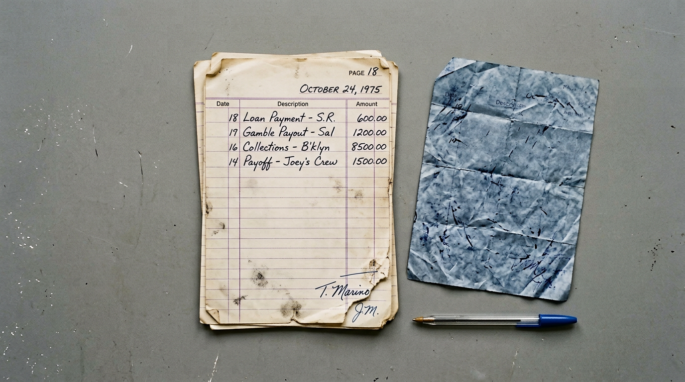
ONE horizontal 16:9 photorealistic 1975 prop reference photograph for the Brooklyn crime drama Sweet Jesus: hand-made carbon copies of ledger pages, isolated on a plain seamless mid-grey studio background with nothing else in frame, even soft top light, sharp focus. The props: a small stack of cheap typing paper, each page a purple-ink carbon copy of ruled ledger columns with handwritten figures, the top page signed and initialled in the corner with a page number, a sheet of blue carbon paper and a ballpoint pen lying beside the stack, one torn page corner. Shot from directly above, everything flat and fully in frame with margin around it. Period 1975 paper and carbon paper, 35mm film grain, unglamorous realism. Period 1975 materials and print, 35mm film grain, unglamorous realism. No people, no hands, no captions, subtitles, overlaid text, logos or watermarks.